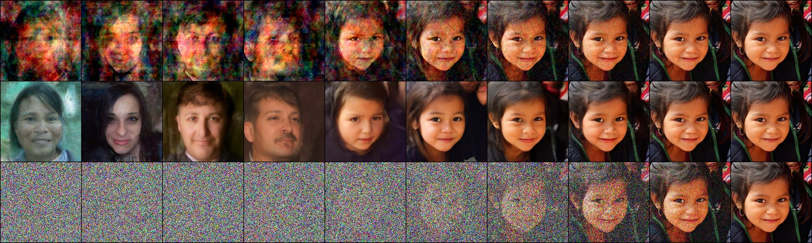
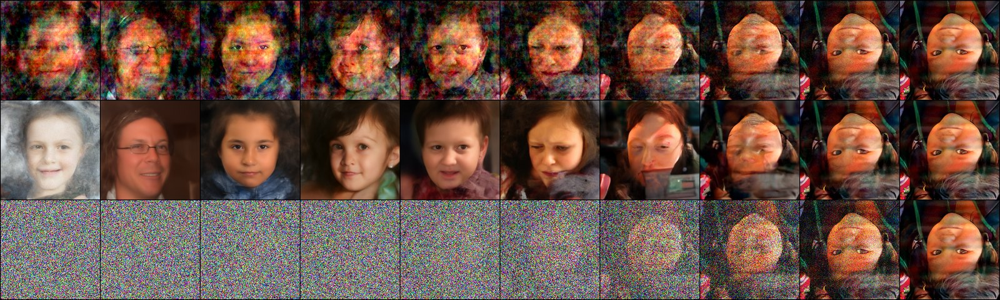
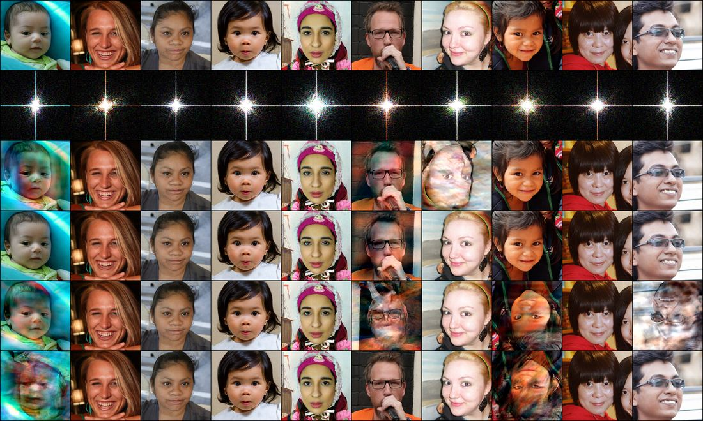

PAPER STUDY · DECOUPLED ANNEALING POSTERIOR SAMPLING
允许反悔重画的
扩散采样。
以前的方法像被绳子拴住：一开始猜错朝向，后面每步只能改 1 毫米，只能错到底。DAPS 剪断了相邻两步的绳子——先一口气变清晰 → 对着线索大改 100 次（甚至直接换张脸）→ 再故意撒上一层轻一点的雪花，进下一轮精修。
方法示意：大改发生在“清晰图”上，不再受上一轮糊图的束缚。
先学会看图：你的 gpu04 跑出来的三行分别在演什么？
把“解逆问题”想成：监控只拍到一团极模糊的影子（或只留下频谱亮度），要你把嫌疑人的清晰人脸画出来。
像 DPS 这类老方法有个死规矩——下一轮只能在上一轮的画上改 1 毫米。一旦第 1 轮雪花太重把人脸朝向猜反了，后面步子越走越小，就一辈子锁死在错的人脸里。DAPS 打破了这个规矩，你在 gpu04:/data1/kxchen/infer-repro/daps/out/ffhq/*/trajectory/ 里保存的每张 3×10 大图，就是它每轮循环的现场录像（行顺序已从 posterior_sample.py 第 154 行核实）：
点一点这 10 步，亲眼看 DAPS 怎么“换脸纠错”
下面放的是你在 gpu04 上实测跑出来的两张完整轨迹图。点击下方的 第 1–10 帧 按钮，高亮框会跟着移动到那一列，告诉你这一刻图里正在发生什么。
真实轨迹逐帧观察器（gpu04 实测原图）
10 个退火切片 · 3 行对照
第 1 帧 / 10：完全在乱猜（先猜出一位成年女性）
什么是“假山谷”？看一眼这张 180° 上下颠倒的脸
前面一直说“相位恢复有很多假山谷，老方法会掉进去出不来”。你自己在 gpu04 跑出的结果图 直接把“假山谷”画给你看了。
相位恢复丢掉了所有相位信息，只留下第 2 行那一排白十字星芒（傅里叶幅度）。在物理上，一张正着的人脸和同一张脸上下左右完全颠倒 180°，算出来的星芒幅度是一模一样的！


num_runs=4（跑 4 遍挑最好）：第 1 行是原图，第 2 行是只剩星芒的测量，第 3–6 行是 DAPS 跑了 4 遍的结果。看第 8 列小女孩和第 10 列眼镜男的第 5 行——整张脸都是上下颠倒的；第 7 列金发女生的第 3 行崩掉，但另外 3 遍全修得清清楚楚。看懂图以后再回头看公式，其实就这两张卡
现在脑子里已经装进上面三行画面的演变过程了，下面这两条公式只是把你刚才看到的画面写成数学速记。
对应轨迹图里的第 1 行 → 第 3 行：只要先在干净空间抓到一张兼顾测量与先验的图 x0（第 1 行），直接给它撒上更轻的高斯雪花 σt₂ε′（第 3 行），就能精确跳到下一层噪声分布，中间无论跨多大都不受限制。
- x_0
- 第 1 行（
x0y）：对照物理线索大改完的干净样本。 - σ_{t₂} ε'
- 往第 1 行上面重新撒的那一层“更轻的雪花”，用来生成第 3 行（
xt）。
这就是把第 2 行（x0hat）变成第 1 行（x0y）的那 100 步修改循环。每一步都在三股力量之间拔河，而且全程不用调用庞大的神经网络，只算便宜的物理算子。
- ① 先验弹簧
(x - x̂₀) / r_t²：别改太疯，拽着你像一张正常人脸（贴近第 2 行）。- ② 测量弹簧
∇‖A(x) - y‖² / 2β_y²：拽着你必须符合真实扫描仪线索（拉出第 1 行）。- ③ 随机噪音
√(2η) ε：故意加一点随机晃动，帮你跳出假坑、保留后验多样性。
和 DDS / DPS / DDRM 放在一起，怎么记才不会混？
| 方法 | 怎么把测量塞进去 | NFE / 速度参考 | 最拿手什么 | 最明显短板 |
|---|---|---|---|---|
| DDRM | 算子做 SVD，频谱上按噪声比抄测量 | 20 NFE / ~2 s | 规整线性任务性价比无敌 | 算子必须能便宜做 SVD，多线圈 MRI/非线性直接挂 |
| DPS | 在 x̂0 算残差，穿过网络反向求导 | 1000 NFE / ~35 s (A100) | 通用、可微非线性都能接 | 反传慢、每步被上一步拴死，相位恢复仅 17.64 dB |
| DDS | 在 x̂0 跑几步 CG，再 DDIM 推进 | ~49 NFE | 多线圈 MRI / CT 线性加速重建 | 依赖线性算子与局部切平面假设 |
| DAPS（本篇） | 5 步 ODE 飞到 x̂0 → 100 步 Langevin → 撒噪退火 | 1000–4000 NFE / ~37 s | 多峰非线性（相位恢复 30.63 dB）与 CS-MRI 31.48 dB | 算力不省、非均匀去模糊输 RED-diff、超参需逐任务调 |
- 1000–4000 NFE 的算力成本 论文 Table 7（A100）：DAPS-1K 约 37 s/图（和 DPS 35 s 一档，比 DDRM 2 s 慢得多）；非线性任务常用 DAPS-4K，且像相位恢复还要多跑几遍选最优。
- 并非所有非线性任务都碾压 论文 Table 1：非均匀去模糊上 DAPS（28.29 dB）反而低于 RED-diff（30.86 dB），且相位恢复在 ImageNet 上标准差高达 ±6.92 dB。
- 需要逐任务调 rt 与 Langevin 步长 附录 F.2 的 Table 8 为每个任务单独指定了 η0 与缩放 δ，换到新任务（比如病理或新 MRI 序列）时仍需重调。
合上前，用 3 个问题检查自己是不是真的懂了
01 / 轨迹图第 2 行（中间）一开始把小女孩猜成了大叔，DAPS 为什么没像 DPS 一样错到底？
因为每轮都在干净空间里脱离上一帧大范围运行 100 步 Langevin，不再受“只能改 1 毫米”的相邻步约束。前 4 列在不断试探并跨过假坑后，第 5 列直接跳回了小女孩，再重新撒噪退火精修。
02 / 既然第 1 行已经是“拿线索改好的清晰图”，为什么第 3 行还要故意再撒一层雪花？
直接改完的第 1 行虽然轮廓和测量对齐了，但表面常有彩色糙噪或不自然的局部纹理（看宝宝图第 1 列最上面就特别明显）。重新撒一层更轻的噪声扔回扩散模型再走一轮，就能把“像真实人脸”的先验细节重新洗顺。
03 / 为什么 gpu04 跑相位恢复时，第 8 列小女孩有一遍变成了“极其清晰的上下颠倒”？
因为只保留傅里叶幅度时，正着的人脸与 180° 颠倒的人脸在测量上完全等价（共轭对称假山谷）。DAPS 只能保证自己“对得上测量且像一张脸”，没法替你猜正反——所以实践里经常需要跑多次（num_runs=4）挑选。